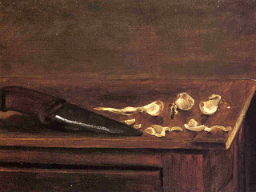

Zevachim 32 - Anybody Can Slaughter a Sacrifice
All those who were previously mentioned as disqualifying the service can do the first step - the slaughter. This is based on the phrase " He shall slaughter the bull before God and the sons of Aaron, the Kohanim, shall bring the blood to the Altar and throw it on the Altar ." From here we see only beginning from the second step of the service - receiving the blood - do we require a Kohen, but anybody can do the slaughter.
Thus, every non-Kohen, man or woman, or even an impure person is qualified to do the slaughter. Therefore, the thought of anyone who does the slaughter counts, and if they intend to eat the sacrifice beyond the allotted time, the sacrifice becomes rejected.
A ritually impure person faces a special problem: he should take care not to make the meat of the sacrifice impure. He has to either have the level of impurity that cannot be transmitted through the knife, or he has to use a sharp reed, which, as a flat wooden object, does not transmit impurity. Additionally, he has to stand outside the Courtyard and use a very long knife.
Art: Gustave Caillebotte - Garlic Cloves And Knife On The Corner Of A Table